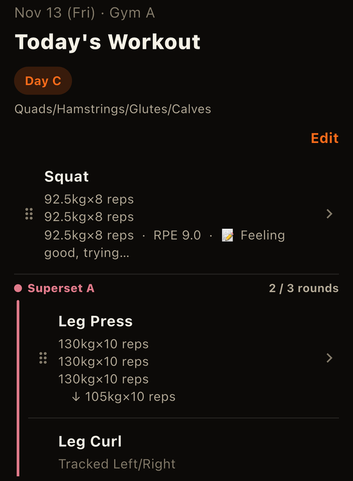
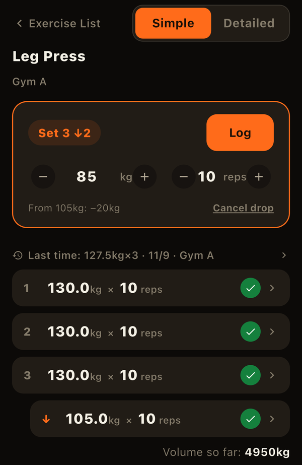

Supersets and drop sets are two common ways to save time at the gym or push a little harder on your last set. Both are easy to add to a routine, but if you don't decide how to log them, your set counts and volume get confusing when you look back. Here's how each one works, what to watch out for, and how to record them.
What is a superset?
A superset means doing two exercises back to back with little or no rest in between. You do one set of the first exercise, go straight into one set of the second, then rest and repeat.
The most common pairing is opposing muscles (antagonists):
- Leg press (quads) + leg curl (hamstrings)
- Bench press (chest) + a row (back)
- Biceps curl + triceps pushdown
One muscle rests while the other works, so you cut total rest time without losing much weight on either exercise.
Things to watch out for
- Same-muscle pairings are a different thing: pairing two chest exercises, for example, makes the second one much weaker. That's fine for finishing off a muscle, but for saving time, antagonist pairs work better
- Use it when you can hold two stations: tying up two machines in a busy gym can get in other people's way. Pick quiet hours or equipment you can use in one spot
- Be careful with heavy compound lifts: starting a heavy squat or deadlift before you've caught your breath makes form break down
What is a drop set?
A drop set means lowering the weight right after a near-failure set and continuing without rest. A typical drop is about 20–25% of the previous weight, for one or two drops.
Example: leg press 130kg × 10 → 105kg × 10 → 85kg × 8
It tires the muscle thoroughly in a short time, so it's usually saved for the last set of an exercise.
Things to watch out for
- Don't do it on every set: the fatigue carries over into your next exercises and next session. Keep it to the last set
- Use equipment you can change quickly: pin-loaded machines and dumbbells let you drop the weight without a break
- Stop when your form breaks: feeling the target muscle matters more than finishing every drop
Tips for logging them
- Log a superset per exercise: even when you alternate, keeping weight and reps under each exercise lets you compare progress exercise by exercise
- Don't count drops as extra sets: if each drop counts as a set, "3 sets" means something different from day to day. Counting a drop together with the set it follows keeps set counts comparable
- Include drops in volume: drops are weight you actually lifted, so including them in total volume (weight × reps) shows how hard you pushed that day
Logging supersets and drop sets in LiFTY
In LiFTY, tap "⛓ Link" between exercises in a menu to make a superset. During a workout, the list shows a line, a "Superset A" label, and the round count, and logging a set moves you to the partner exercise automatically.

Start a drop with "↓ Add Drop" after logging a set. The weight is filled in using your drop step setting, and logging it moves straight to the next drop, so you don't have to tap the button again for each drop. Tap "Cancel drop" when you're done. If you plan drops in a menu's targets, logging that set goes straight into the drops, and you return to the next set once they're logged.

A drop counts together with the set it follows, as one set, and is included in volume, estimated 1RM, and personal bests. In a superset, you move to the partner exercise after that set's drops. Apple Watch works the same way. For step-by-step instructions, see The Basic Recording Flow, Building a menu, and Apple Watch in the User Guide.
Related articles
- How Long Should You Rest Between Sets? Guidelines Without Being Ruled by a Timer
- What Is Training Volume? How to Calculate It and Beat Plateaus
- How Many Sets per Muscle per Week? Finding Your Range
In LiFTY, moving to your superset partner and rolling into the next drop happen just by logging. No account needed to start right away.
Download on the App Store